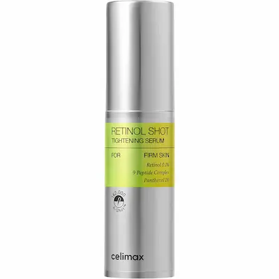
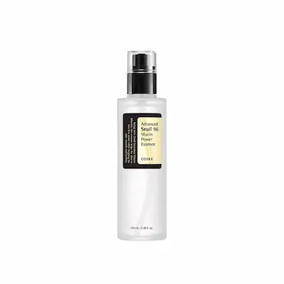

Celimax The Vita A Retinol Shot Tightening Serum — ser cu retinol pentru îngrijirea texturii și fermității pielii
Ser coreean pentru persoanele care vor să introducă retinolul în rutina de îngrijire. Analizăm formula cu 0,1% retinol pur, un complex de 9 peptide și 1% pantenol, caracteristicile ingredientelor-cheie și rolul lor în îngrijirea cosmetică a pielii.
De ce merită atenție acest produs?
Celimax The Vita A Retinol Shot Tightening Serum — este un ser coreean destinat celor interesați de îngrijirea cu retinol și care vor să acorde mai multă atenție aspectului, texturii și fermității pielii. Formula combină 0,1% retinol pur, un complex de 9 peptide și 1% pantenol. Asocierea ingredientului activ cu alte componente complementare face din acest produs o opțiune interesantă pentru persoanele care vor să introducă retinolul în rutina de îngrijire, cu condiția unei utilizări treptate.
Ingredientul central al formulei este retinolul, o formă a vitaminei A utilizată pe scară largă în produsele cosmetice pentru îngrijirea pielii cu semne de îmbătrânire și cu textură neuniformă. Acesta este completat de un complex de 9 peptide, inclus de producător în formulă pentru îngrijirea fermității pielii. Pantenolul, prezent într-o concentrație de 1%, contribuie la menținerea confortului pielii. Prin asocierea acestor ingrediente, serul este conceput pentru o îngrijire complexă, nu doar pentru utilizarea unui singur ingredient activ.
Un aspect important este concentrația de retinol — 0,1%. Chiar dacă ai mai folosit produse cosmetice cu ingrediente active, este important să ții cont de reacția individuală a pielii și să nu mărești prea repede frecvența aplicării. Producătorul recomandă începătorilor să înceapă cu o cantitate mică de produs, aplicată o seară da, una nu, pentru a permite pielii să se adapteze treptat la retinol. În această recenzie analizăm compoziția Celimax The Vita A Retinol Shot Tightening Serum, rolul ingredientelor-cheie, particularitățile utilizării și măsurile de precauție, precum și cui i s-ar putea potrivi acest ser.
Textura și prima utilizare
Celimax The Vita A Retinol Shot Tightening Serum — este un ser pentru îngrijirea pielii cu retinol, care atrage atenția prin combinația de ingrediente active: 0,1% retinol pur, un complex de 9 peptide și 1% pantenol. Spre deosebire de produsele hidratante obișnuite, formulele cu retinol necesită mai multă atenție în utilizare. De aceea, este recomandat să introduci serul treptat în rutină, mai ales dacă nu ai mai folosit până acum produse care conțin acest ingredient.
Particularitatea produselor cosmetice cu retinol nu ține doar de compoziție, ci și de necesitatea de a urmări reacția pielii. În primele etape de utilizare pot apărea uscăciune, roșeață, descuamare sau o senzație de sensibilitate crescută. Aceste reacții nu apar obligatoriu și nu înseamnă că produsul acționează mai eficient. Pantenolul, în concentrație de 1%, completează formula cu un ingredient care ajută la menținerea confortului pielii, în timp ce complexul de 9 peptide este inclus pentru îngrijirea fermității acesteia.
Celimax The Vita A Retinol Shot Tightening Serum poate fi o opțiune interesantă pentru persoanele care vor să introducă retinolul în rutina de îngrijire și să acorde mai multă atenție texturii și aspectului pielii. Totuși, este important să ții cont de toleranța individuală: chiar și concentrația de 0,1% poate fi resimțită de pielea neobișnuită cu retinolul sau de cea sensibilă. Înainte de prima utilizare, este recomandat să testezi produsul pe o zonă mică de piele. Nu aplica serul pe pielea deteriorată, iritată sau inflamată și evită zona din jurul ochilor și buzelor.
Producătorul recomandă începătorilor să înceapă cu o cantitate mică de produs, aplicată o seară da, una nu, în primele două săptămâni. Aplică serul pe pielea curată și uscată, apoi folosește o cremă hidratantă. Dacă pielea tolerează bine produsul, poți crește treptat frecvența aplicării, respectând recomandările producătorului. Nu este indicat să combini de la început retinolul cu numeroase alte ingrediente active. Dimineața, folosește întotdeauna un produs cu protecție solară. Dacă apare o iritație pronunțată sau un disconfort puternic, redu frecvența aplicării sau întrerupe utilizarea.
Este important de reținut: aplicarea mai frecventă și senzațiile mai intense pe piele nu înseamnă automat un rezultat mai bun. În îngrijirea cu retinol contează în special introducerea treptată, consecvența și atenția acordată reacției pielii. Începe, așadar, cu o cantitate mică de produs, nu neglija hidratarea și folosește zilnic protecție solară.


Cu ce produse poți combina Celimax The Vita A Retinol Shot Tightening Serum?
Celimax The Vita A Retinol Shot Tightening Serum poate fi integrat într-o rutină de îngrijire orientată spre îmbunătățirea aspectului și texturii pielii. Deoarece serul conține 0,1% retinol pur, este important să nu încarci rutina cu prea multe ingrediente active. Cel mai bine este să optezi pentru o curățare delicată, hidratare de bază, o cremă care să susțină bariera cutanată și protecție solară zilnică. Atunci când începi să folosești retinol, introducerea treptată a produsului și observarea atentă a reacției pielii sunt deosebit de importante.
1. Curățare — Etude SoonJung pH 6.5 Whip Cleanser
Pentru începutul rutinei poți alege Etude SoonJung pH 6.5 Whip Cleanser, un produs de curățare delicat, cu o textură aerată de spumă. Acesta ajută la îndepărtarea impurităților și pregătește pielea pentru pașii următori. Este important ca produsul de curățare să nu lase senzația neplăcută de uscăciune sau piele care „ține”: după spălare, pielea ar trebui să se simtă confortabil. Înainte de aplicarea serului cu retinol, lasă pielea să se usuce complet.
2. Pasul principal — Celimax The Vita A Retinol Shot Tightening Serum
Acesta este produsul central al selecției noastre. Formula cu 0,1% retinol pur, complex de 9 peptide și 1% pantenol este concepută pentru îngrijirea texturii și fermității pielii. Aplică o cantitate mică de ser pe pielea curată și uscată, evitând zona din jurul ochilor, buzele și aripile nasului. Dacă abia începi să folosești retinol, producătorul recomandă aplicarea o dată la două seri în primele două săptămâni. Nu combina produsul în aceeași seară cu numeroase alte ingrediente active care pot provoca iritații și ține cont de toleranța individuală a pielii.
3. Hidratare — Torriden DIVE-IN Low Molecule Hyaluronic Acid Toner
Pentru un plus de hidratare poți lua în considerare Torriden DIVE-IN Low Molecule Hyaluronic Acid Toner. Tonerul cu acid hialuronic poate completa rutina zilnică și poate contribui la menținerea senzației de piele hidratată. Totuși, atunci când folosești retinol, este important să ții cont de reacția pielii: dacă aceasta devine sensibilă, simplifică temporar rutina și păstrează doar produsele de bază care nu provoacă disconfort.
4. Cremă hidratantă — Illiyoon Ceramide Ato Concentrate Cream
Pentru a încheia rutina de seară poți alege Illiyoon Ceramide Ato Concentrate Cream. Crema cu ceramide completează rutina cu ingrediente care susțin bariera cutanată și ajută la reducerea senzației de uscăciune. Aplic-o după ce serul a fost absorbit. Dacă ai pielea uscată sau sensibilă, o cremă hidratantă confortabilă este deosebit de importantă în perioada de introducere treptată a retinolului.
5. Protecție solară — SKIN1004 Madagascar Centella Hyalu-Cica Water-Fit Sun Serum SPF50+ PA++++
Dimineața, încheie întotdeauna rutina cu un produs de protecție solară. SKIN1004 Madagascar Centella Hyalu-Cica Water-Fit Sun Serum SPF50+ PA++++ are o textură lejeră, ușor de integrat în rutina zilnică. Oferă protecție împotriva radiațiilor UVA și UVB atunci când este aplicat corect. Folosește o cantitate suficientă și reaplică produsul conform instrucțiunilor, mai ales dacă petreci mult timp în aer liber. Protecția solară este deosebit de importantă atunci când folosești produse cosmetice cu retinol.
Cum îți organizezi rutina de îngrijire?
Dimineața: Etude SoonJung pH 6.5 Whip Cleanser → Torriden DIVE-IN Hyaluronic Acid Toner, dacă este necesar → Illiyoon Ceramide Ato Concentrate Cream, dacă este necesar → SKIN1004 Hyalu-Cica Water-Fit Sun Serum SPF50+ PA++++.
Seara, în zilele în care folosești retinol: Etude SoonJung pH 6.5 Whip Cleanser → lasă pielea să se usuce complet → Celimax The Vita A Retinol Shot Tightening Serum → Illiyoon Ceramide Ato Concentrate Cream. Folosește tonerul hidratant doar dacă pielea tolerează bine această combinație.
Seara, în zilele de pauză de la retinol: Etude SoonJung pH 6.5 Whip Cleanser → Torriden DIVE-IN Hyaluronic Acid Toner → Illiyoon Ceramide Ato Concentrate Cream. În aceste seri, concentrează-te pe hidratare și pe menținerea confortului pielii.
Nu este necesar să cumperi și să folosești toate produsele dintr-o dată. Pentru început, sunt suficiente un produs de curățare delicat, serul cu retinol și o cremă hidratantă potrivită. În perioada de adaptare, evită să adaugi în aceeași seară acizi exfolianți puternici, scruburi și alte produse care pot provoca iritații. Introdu produsele treptat și urmărește reacția pielii. Dacă apar iritații pronunțate, senzație intensă de arsură sau roșeață persistentă, redu frecvența aplicării sau întrerupe utilizarea serului. Dimineața, folosește întotdeauna protecție solară.
Selecție de produse de la Beauty Panda
Selecție editorială Estetica Lens.
Am ales câteva produse coreene care pot completa rutina de
îngrijire alături de Celimax The Vita A Retinol Shot Tightening
Serum: curățare delicată, hidratare intensă, hrănirea pielii și
susținerea barierei cutanate, precum și protecție solară zilnică.
Disponibilitatea și condițiile actuale de achiziție pot fi
verificate direct la
BeautyPanda.

COSRX Low pH Good Morning Gel Cleanser
Curățare delicată
Gel de curățare cu pH scăzut, potrivit pentru rutina zilnică. Ajută la îndepărtarea impurităților fără a transforma curățarea într-un pas prea agresiv pentru pielea predispusă la uscăciune.
Celimax The Vita A Retinol Shot Tightening Serum
Produsul principal al recenziei
Ser cu 0,1% retinol pur, complex de 9 peptide și 1% pantenol, conceput pentru îngrijirea texturii, fermității și aspectului pielii.

COSRX Advanced Snail 96 Mucin Power Essence
Hidratare și catifelare
Esență cu filtrat de secreție de melc, pentru un plus de hidratare și catifelare. Poate fi un pas confortabil în rutina de îngrijire din serile în care nu folosești retinol.

Isntree Hyaluronic Acid Moist Cream
Confort pentru pielea uscată
Cremă hidratantă cu acid hialuronic, care ajută la catifelarea pielii și la reducerea senzației de piele care „ține”. Potrivită pentru ultimul pas al rutinei, atunci când pielea are nevoie de mai multă hidratare.

Round Lab Birch Juice Moisturizing Sunscreen
Protecție solară zilnică
Produs hidratant cu protecție solară SPF50+ PA++++, potrivit pentru ultimul pas al rutinei de dimineață. Protecția împotriva radiațiilor UVA și UVB este deosebit de importantă atunci când folosești produse cu retinol.
Analiza ingredientelor Celimax The Vita A Retinol Shot Tightening Serum
Principalul atu al produsului Celimax The Vita A Retinol Shot Tightening Serum este combinația dintre 0,1% retinol pur, un complex de 9 peptide și 1% pantenol. Producătorul a conceput formula pentru îngrijirea texturii pielii, a fermității și a semnelor vizibile ale îmbătrânirii. Totuși, serul este interesant nu doar datorită retinolului: ingredientele complementare contribuie la o formulă cu mai multe direcții de îngrijire.
Retinolul face parte din familia derivaților vitaminei A și este utilizat pe scară largă în produsele cosmetice destinate pielii cu textură neuniformă și riduri vizibile. Este însă un ingredient activ care trebuie introdus treptat în rutina de îngrijire. Persoanele cu piele uscată sau sensibilă ar trebui să fie deosebit de atente: contează nu doar concentrația declarată de retinol, ci și starea barierei cutanate, frecvența aplicării și asocierea cu alte produse. Să vedem care sunt principalele componente ale formulei și ce rol au.
1. Retinol 0.1% — retinol pur pentru îngrijirea pielii
Ingredientul central al serului este retinolul pur în concentrație de 0,1%. Această formă a vitaminei A este utilizată în cosmetică pentru îngrijirea semnelor vizibile ale îmbătrânirii, a texturii neuniforme și a aspectului mai puțin neted al pielii. Retinolul participă la procesele de reînnoire a epidermei și, prin utilizare regulată, poate contribui la îmbunătățirea aspectului pielii.
De ce este important: concentrația de 0,1% face produsul interesant pentru persoanele care vor să înceapă să folosească retinol sau să îl includă într-o rutină anti-aging. Totuși, chiar și o concentrație relativ mică nu garantează absența iritațiilor. La începutul utilizării pot apărea uscăciune, descuamare, roșeață și senzația de piele care „ține”. De aceea, produsul trebuie introdus treptat, în funcție de reacția pielii.
2. 9-Peptide Complex — complex de nouă peptide
O altă particularitate a formulei este complexul de 9 peptide. Peptidele sunt lanțuri scurte de aminoacizi, utilizate în cosmetică drept ingrediente de îngrijire. Acestea sunt incluse în formule concepute pentru a susține un aspect mai neted și mai ferm al pielii.
De ce este important: complexul de peptide completează retinolul și conferă formulei o abordare cu mai multe ingrediente active. Se înscrie în conceptul general al serului, orientat spre îngrijirea semnelor vizibile ale îmbătrânirii. Totuși, simpla prezență a nouă peptide nu înseamnă că fiecare se găsește într-o concentrație ridicată sau că oferă un efect individual garantat.
3. Panthenol 1% — pantenol pentru confortul pielii
Pantenolul, cunoscut și sub denumirea de provitamina B5, este un ingredient popular în produsele cosmetice, unde este utilizat pentru a susține hidratarea și confortul pielii. Pentru formula Celimax, producătorul indică o concentrație de 1%. Pantenolul ajută la calmarea senzației de uscăciune și la susținerea barierei cutanate.
De ce este important: atunci când folosești retinol, pielea poate deveni mai uscată și mai sensibilă. De aceea, prezența pantenolului este un aspect interesant într-o formulă cu vitamina A. Totuși, acesta nu exclude posibilitatea apariției iritațiilor și nu înlocuiește o cremă hidratantă adecvată, mai ales dacă pielea este predispusă la uscăciune.
4. Ingrediente hidratante — susținerea echilibrului hidric al pielii
Pe lângă ingredientele principale, formulele cosmetice conțin de obicei umectanți, care ajută la reținerea apei în straturile superficiale ale pielii. Printre aceștia se pot număra Glycerin, Butylene Glycol, Propanediol și alte substanțe, dacă sunt prezente în lista INCI a versiunii respective a produsului.
De ce este important: componenta hidratantă este deosebit de relevantă pentru pielea uscată, care poate reacționa mai intens la introducerea retinolului. Astfel de ingrediente contribuie la menținerea unei senzații mai confortabile după aplicare. Lista exactă a umectanților și poziția lor în compoziție trebuie verificate în lista INCI de pe ambalaj.
5. Ingrediente emoliente — confort și textură
În serurile cu retinol contează nu doar ingredientele active, ci și baza formulei. Ingredientele emoliente contribuie la distribuirea uniformă a produsului, influențează textura și senzația lăsată pe piele după aplicare. În funcție de formula concretă, acestea pot include diferite ingrediente lipidice, siliconi și alte substanțe cu rol emolient.
De ce este important: pentru pielea uscată, confortul oferit de textura produsului are o importanță aparte. Dacă după aplicarea serului apare senzația de piele care „ține”, poți completa rutina de seară cu o cremă mai bogată. Totuși, nu trebuie să consideri că baza emolientă previne complet uscăciunea sau iritațiile asociate utilizării retinolului.
6. Ingrediente care susțin bariera cutanată
Bariera cutanată ajută la menținerea hidratării și reduce impactul factorilor externi iritanți. În produsele cosmetice, pentru susținerea acesteia sunt utilizate diferite categorii de ingrediente: lipide, umectanți și substanțe emoliente. Lista concretă depinde de compoziția produsului finit.
De ce este important: atunci când introduci retinolul în rutină, este deosebit de important să nu încarci îngrijirea cu ingrediente active suplimentare și să nu neglijezi confortul pielii. Pentru pielea uscată, este util să asociezi serul cu o cremă potrivită, iar dacă apare o iritație pronunțată, să întrerupi temporar utilizarea retinolului până când pielea își recapătă confortul.
7. Retinol și peptide — o combinație pentru îngrijire complexă
În Celimax The Vita A Retinol Shot Tightening Serum, producătorul a combinat retinolul cu un complex de peptide. Această asociere este interesantă deoarece reunește într-o singură formulă două direcții populare în îngrijirea cosmetică modernă: un derivat al vitaminei A și peptidele.
De ce este important: formula este concepută pentru îngrijirea complexă a semnelor vizibile ale îmbătrânirii, a texturii și a fermității pielii. Totuși, combinația acestor ingrediente nu trebuie privită ca o garanție a unui anumit rezultat. Efectul depinde de regularitatea aplicării, toleranța individuală și starea generală a pielii.
8. Ingrediente auxiliare, stabilizatori și conservanți
La fel ca orice produs cosmetic finit, serul conține și alte ingrediente, nu doar componentele evidențiate de producător în descriere. Formula poate include substanțe care contribuie la consistență, stabilitate, distribuirea produsului și protecția împotriva contaminării microbiene. Lista exactă trebuie verificată în lista INCI completă de pe ambalaj.
De ce este important: ingredientele auxiliare influențează și ele proprietățile produsului finit. Dacă ai pielea sensibilă, merită să verifici întreaga compoziție, nu doar concentrația de retinol și numărul de peptide. O reacție individuală poate apărea chiar și la produsele care conțin numeroase ingrediente cu rol de îngrijire.
Concluzie: ce face interesantă formula Celimax The Vita A Retinol Shot?
Celimax The Vita A Retinol Shot Tightening Serum atrage atenția prin combinația dintre 0,1% retinol pur, un complex de 9 peptide și 1% pantenol. Formula este orientată în principal spre îngrijirea texturii și fermității pielii, precum și a semnelor vizibile ale îmbătrânirii. Pantenolul completează compoziția cu un ingredient de îngrijire care ajută la menținerea hidratării și confortului pielii.
Pentru pielea uscată, este deosebit de important să introduci produsul corect în rutină. Nu începe cu aplicarea zilnică: producătorul recomandă persoanelor care folosesc retinol pentru prima dată să aplice o cantitate mică o dată la două seri, în primele două săptămâni. După curățare, aplică serul și completează rutina cu o cremă hidratantă. Dacă pielea reacționează prin uscăciune sau iritație, redu cantitatea de produs sau frecvența aplicării.
Retinolul este recomandat pentru utilizare seara. În ziua următoare, aplică un produs cu protecție solară cu spectru larg. În perioada de adaptare, este de preferat să nu combini serul în aceeași seară cu produse exfoliante pe bază de acizi, scruburi și alte ingrediente active care pot provoca iritații. Dacă pielea este foarte uscată, sensibilă sau deja iritată, este mai bine să îi redai mai întâi confortul și abia apoi să iei în considerare introducerea retinolului.
Este important de reținut că valorile de 0,1% retinol și 1% pantenol, precum și prezența complexului de 9 peptide, sunt informații declarate de producător. Compoziția completă și ordinea ingredientelor trebuie verificate în lista INCI de pe ambalajul versiunii concrete a produsului. Prezența ingredientelor cu rol de îngrijire nu exclude posibilitatea unei reacții individuale la retinol.


Unde găsești?
Celimax The Vita A Retinol Shot Tightening Serum este disponibil la BeautyPanda. Pentru a afla disponibilitatea și prețul actual, contactează direct vânzătorul.
Magazinele Beauty Panda din Moldova:
📍 Soroca
str. Grigore Vieru 9B, Soroca, Moldova, MD-3001
📍 Drochia
str. 31 August 20/C, Drochia, Moldova
*Disponibilitatea, prețul și condițiile de achiziție se recomandă a fi verificate la vânzător înainte de vizită. Linkul duce către pagina vânzătorului de pe Instagram.
Întrebări frecvente
Pot folosi Celimax The Vita A Retinol Shot Tightening Serum în fiecare zi?
Dacă abia începi să folosești retinol, nu este recomandat să aplici serul zilnic de la început. Producătorul recomandă ca, în primele două săptămâni, să aplici produsul o dată la două seri, folosind o cantitate mică. Dacă pielea tolerează bine formula, poți crește treptat frecvența aplicării. Dacă apar uscăciune pronunțată, descuamare sau iritații, redu frecvența utilizării sau fă o pauză.
Pentru ce tip de ten este potrivit acest ser?
Celimax The Vita A Retinol Shot Tightening Serum poate fi o opțiune pentru persoanele care vor să introducă retinolul în rutina de îngrijire a pielii cu textură neuniformă și semne vizibile ale îmbătrânirii. Produsul poate fi folosit pentru diferite tipuri de ten, însă toleranța la retinol diferă de la o persoană la alta. Tenul uscat are nevoie în special de o cremă hidratantă și hrănitoare, iar tenul sensibil necesită o introducere și mai prudentă a serului. Dacă pielea este deja iritată sau afectată, amână utilizarea până la refacerea acesteia.
Este Celimax Retinol Shot potrivit pentru tenul uscat?
Da, tenul uscat nu reprezintă automat o contraindicație pentru utilizarea retinolului, însă necesită mai multă atenție. Formula Celimax conține 1% pantenol, care ajută la menținerea hidratării și confortului pielii. Totuși, retinolul poate provoca uscăciune și descuamare, mai ales la începutul utilizării. Începe cu o cantitate mică, aplică serul o dată la două seri și completează întotdeauna rutina cu o cremă hidratantă și hrănitoare.
Ce înseamnă 0,1% Retinol în compoziția serului?
Aceasta este concentrația de retinol pur declarată de producător pentru formulă. Retinolul face parte din familia derivaților vitaminei A și este utilizat pe scară largă în cosmetică pentru îngrijirea texturii pielii și a semnelor vizibile ale îmbătrânirii. Concentrația de 0,1% nu înseamnă că produsul va fi tolerat la fel de toate persoanele: chiar și la acest nivel pot apărea uscăciune, roșeață și descuamare.
Care este rolul celor 9 peptide și al pantenolului în formulă?
Complexul de 9 peptide completează abordarea de îngrijire a semnelor vizibile ale îmbătrânirii și a fermității pielii. Pantenolul, prezent într-o concentrație de 1%, este un ingredient cu rol de îngrijire, care ajută la menținerea hidratării și confortului. Aceste ingrediente fac formula mai complexă, însă nu garantează absența iritațiilor care pot apărea uneori la utilizarea retinolului.
Cum se aplică corect Celimax Retinol Shot?
Folosește serul seara, după curățarea pielii. Aplică o cantitate mică pe tenul curat și uscat, evitând zona din jurul ochilor, buzele și zonele cu leziuni. Continuă apoi rutina cu o cremă hidratantă sau hrănitoare. În primele două săptămâni, producătorul recomandă persoanelor care încep să folosească retinol să aplice produsul o dată la două seri. Dimineața, folosește obligatoriu un produs de protecție solară cu spectru larg, cu SPF 30 sau mai mare, de preferat SPF 50. Respectă și instrucțiunile de pe ambalaj.
Pot combina serul cu acizi exfolianți și alte ingrediente active?
La început, este mai bine să nu combini retinolul în aceeași rutină de seară cu exfolianți pe bază de acizi, produse cu efect exfoliant intens și alte ingrediente active care pot provoca iritații. O astfel de asociere poate crește riscul de uscăciune și iritare. Dacă folosești acizi sau alte produse active, este mai prudent să le aplici în seri diferite și să evaluezi mai întâi toleranța pielii la retinol.
Pot folosi Celimax Retinol Shot împreună cu un alt ser și o cremă?
Da. După curățare și aplicarea serului cu retinol, poți folosi o cremă hidratantă. Pentru tenul uscat sunt deosebit de utile produsele cu pantenol, ceramide și alte ingrediente hidratante și emoliente. Dacă ai pielea sensibilă sau abia te obișnuiești cu retinolul, este mai bine să nu încarci rutina de seară cu ingrediente active suplimentare. Introdu produsele noi treptat, pentru a putea identifica mai ușor cauza unei eventuale reacții.
Pot folosi retinol dacă am pielea sensibilă?
Pielea sensibilă poate reacționa la retinol prin uscăciune, roșeață, descuamare sau senzație de arsură. De aceea, înainte de utilizarea regulată, este recomandat să testezi produsul pe o zonă mică de piele și să urmărești cu atenție reacția. Începe cu o cantitate minimă și aplicări rare. Dacă pielea are tendința de a dezvolta reacții pronunțate, prezintă leziuni sau este deja iritată, este mai bine să consulți un dermatolog înainte de introducerea retinolului.
Ce fac dacă după aplicare apar uscăciune, senzație de arsură sau roșeață?
Dacă după utilizare apare o senzație intensă de arsură, roșeață pronunțată, mâncărime sau descuamare vizibilă, întrerupe folosirea serului. Concentrează-te pe curățare delicată și hidratare de bază, excluzând temporar celelalte ingrediente active. Nu reaplica retinolul până când pielea nu se reface. Dacă reacția este puternică, persistă sau se agravează, consultă un dermatolog.
Este necesar să folosesc SPF când aplic retinol?
Da. Atunci când folosești retinol, este deosebit de important să protejezi zilnic pielea împotriva radiațiilor ultraviolete. Dimineața, aplică un produs de protecție solară cu spectru larg, cu SPF 30 sau mai mare, de preferat SPF 50, și reaplică-l conform instrucțiunilor. Nu uita de protecția suplimentară atunci când petreci mult timp la soare.
Când pot apărea primele rezultate în urma utilizării retinolului?
Rezultatele utilizării retinolului nu apar imediat. Pentru a evalua schimbările texturii pielii și ale aspectului ridurilor este nevoie de utilizare regulată pe o perioadă mai îndelungată. Ritmul și intensitatea rezultatelor depind de starea inițială a pielii, regularitatea aplicării și toleranța individuală. Nu crește frecvența utilizării pentru a grăbi efectele: introducerea treptată și confortul pielii sunt mai importante decât intensitatea rutinei.
Pot folosi retinolul vara?
Anotimpul, în sine, nu este singurul criteriu care determină dacă poți folosi retinol. Este important să aplici zilnic protecție solară, să eviți expunerea excesivă la soare și să urmărești cu atenție starea pielii. Dacă nu poți asigura o protecție eficientă împotriva radiațiilor UV sau dacă pielea este iritată în urma expunerii la soare, este mai bine să amâni utilizarea produsului.